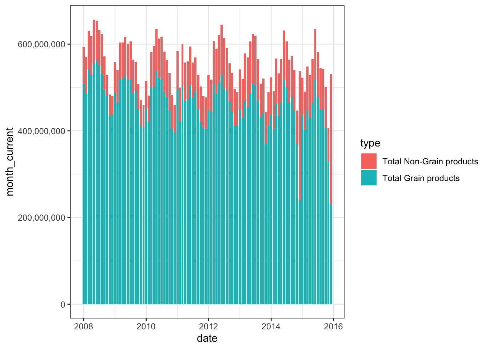

Loading required package: timechange
Attaching package: 'lubridate'
The following objects are masked from 'package:base':
date, intersect, setdiff, union
library(knitr)library(maps)
Attaching package: 'maps'
The following object is masked from 'package:purrr':
map
#install.packages("tidytuesdayR")
# Get the Databrewing_materials <- readr::read_csv('https://raw.githubusercontent.com/rfordatascience/tidytuesday/master/data/2020/2020-03-31/brewing_materials.csv')
Rows: 1440 Columns: 9
── Column specification ────────────────────────────────────────────────────────
Delimiter: ","
chr (3): data_type, material_type, type
dbl (6): year, month, month_current, month_prior_year, ytd_current, ytd_prio...
ℹ Use `spec()` to retrieve the full column specification for this data.
ℹ Specify the column types or set `show_col_types = FALSE` to quiet this message.
Rows: 1580 Columns: 10
── Column specification ────────────────────────────────────────────────────────
Delimiter: ","
chr (4): data_type, tax_status, type, tax_rate
dbl (6): year, month, month_current, month_prior_year, ytd_current, ytd_prio...
ℹ Use `spec()` to retrieve the full column specification for this data.
ℹ Specify the column types or set `show_col_types = FALSE` to quiet this message.
Rows: 137 Columns: 6
── Column specification ────────────────────────────────────────────────────────
Delimiter: ","
chr (1): brewer_size
dbl (5): year, n_of_brewers, total_barrels, taxable_removals, total_shipped
ℹ Use `spec()` to retrieve the full column specification for this data.
ℹ Specify the column types or set `show_col_types = FALSE` to quiet this message.
Rows: 1872 Columns: 4
── Column specification ────────────────────────────────────────────────────────
Delimiter: ","
chr (2): state, type
dbl (2): year, barrels
ℹ Use `spec()` to retrieve the full column specification for this data.
ℹ Specify the column types or set `show_col_types = FALSE` to quiet this message.
# Or read in with tidytuesdayR package (https://github.com/thebioengineer/tidytuesdayR)# PLEASE NOTE TO USE 2020 DATA YOU NEED TO USE tidytuesdayR version ? from GitHub# Either ISO-8601 date or year/week works!# Install via devtools::install_github("thebioengineer/tidytuesdayR")tuesdata <- tidytuesdayR::tt_load('2020-03-31')
--- Compiling #TidyTuesday Information for 2020-03-31 ----
--- There are 4 files available ---
--- Starting Download ---
Downloading file 1 of 4: `beer_states.csv`
Downloading file 2 of 4: `beer_taxed.csv`
Downloading file 3 of 4: `brewer_size.csv`
Downloading file 4 of 4: `brewing_materials.csv`
--- Download complete ---
tuesdata <- tidytuesdayR::tt_load(2020, week =14)
--- Compiling #TidyTuesday Information for 2020-03-31 ----
--- There are 4 files available ---
--- Starting Download ---
Downloading file 1 of 4: `beer_states.csv`
Downloading file 2 of 4: `beer_taxed.csv`
Downloading file 3 of 4: `brewer_size.csv`
Downloading file 4 of 4: `brewing_materials.csv`
- Types of ingredients and quantities used in beer production over time
. Using the brewing materials data set, I will make a bar plot (geom_col) for type and month_current variables, and fill using material_type. I will filter out anything that says total to exclude the totals and only keep individual values.
Relationship between total barrels produced and brewery size .Since brewery size is not a definite number, I can’t do correlation analysis, I will just do visualize the data as is. .
From the brewer size data set, I will create a graph showing the barrel number and brew size . Potentially look at where the beer is produced (might require a map)
Number of barrels consumed on premises vs barrels that end up in bottles&cans over time . Group by states and year . Calculate the percentage of barrels consumed (barrels/sum(barrels)) . filter those consumed only on premises and then in bottles/cans . make a map that sorts colors based on percentages
labs(x="Time",y="Pounds used in beer production",fill="Material Used")
$x
[1] "Time"
$y
[1] "Pounds used in beer production"
$fill
[1] "Material Used"
attr(,"class")
[1] "labels"
#Grain or No Grainbrewing_materials %>%filter(str_detect(material_type,"Total.*products")) %>%mutate(type=fct_reorder(type,month_current, sum)) %>%ggplot(aes(date,month_current,fill=type))+geom_col()+scale_y_continuous(labels=scales::comma) +theme_bw()

labs(x="Time",y="Pounds used in beer production",fill="Material Used")
$x
[1] "Time"
$y
[1] "Pounds used in beer production"
$fill
[1] "Material Used"
attr(,"class")
[1] "labels"